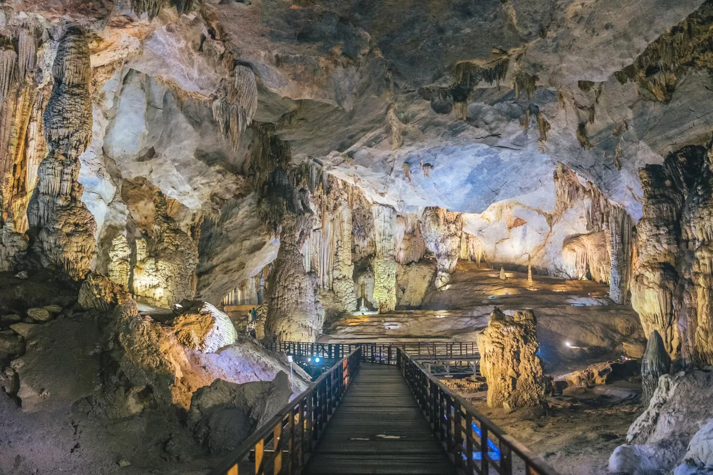
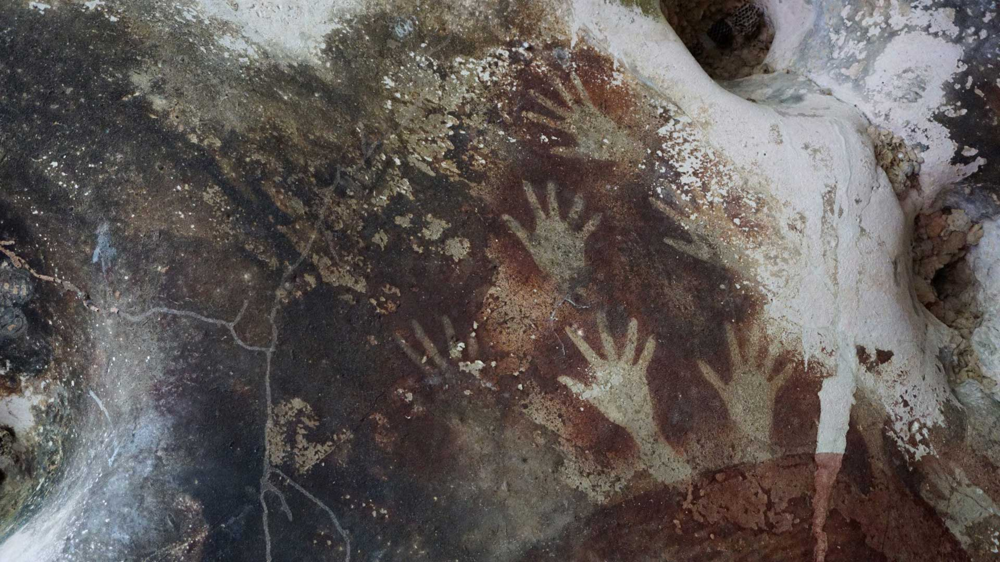
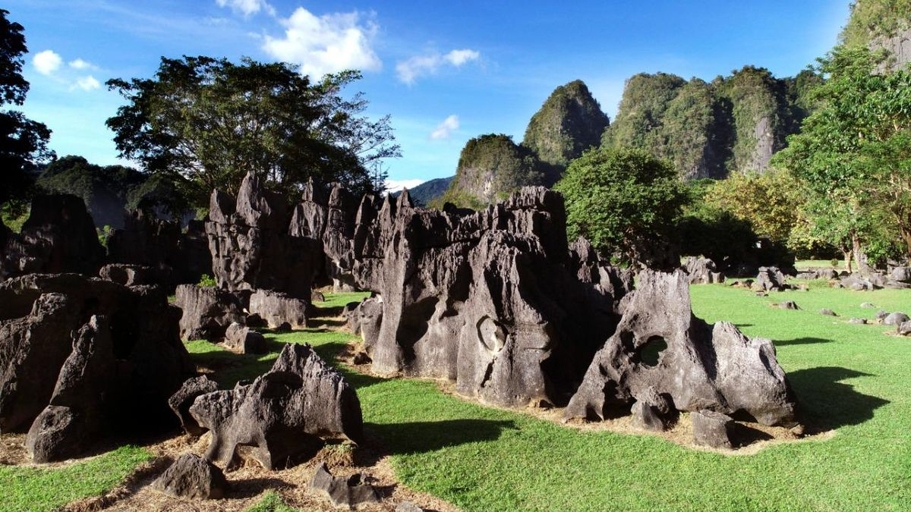
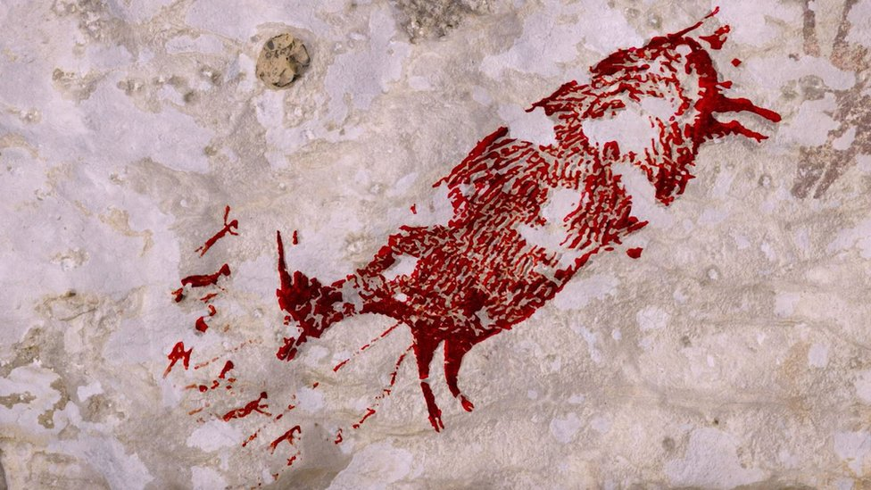

Tentang Taman Purbakala Leang-Leang
Taman Purbakala Leang-Leang merupakan situs cagar budaya prasejarah yang terletak di Kabupaten Maros, Sulawesi Selatan. Kawasan ini berdiri di antara hamparan tebing karst terbesar kedua di dunia, menawarkan kombinasi unik antara wisata edukasi sejarah dan keindahan alam.
Destinasi ini terkenal dengan penemuan lukisan dinding gua berupa cap telapak tangan manusia purba dan gambar babi rusa yang diperkirakan berusia lebih dari 40.000 tahun. Selain lukisan, ditemukan pula berbagai artefak batu dan alat serut prasejarah.
Selain situs gua arkeologi (seperti Gua Pettae dan Gua Pettakere), kawasan ini menyajikan taman rumput hijau asri yang dikelilingi gugusan batu karst bernuansa purba dan aliran sungai jernih.
Galeri Destinasi di Leang-Leang
1.Interior Gua Pettae

2. Lukisan Telapak Tangan Prasejarah

3. Pemandangan Taman Karst & Batuan Alam

4. Lukisan Babi Rusa Prasejarah

Ragam Aktivitas Wisata
- Eksplorasi Gua Arkeologi: Menelusuri Gua Pettae dan Gua Pettakere untuk melihat langsung lukisan telapak tangan purba serta artefak prasejarah.
- Wisata Edukasi & Sejarah: Mempelajari kehidupan manusia purba masa lalu bersama pemandu wisata lokal atau petugas cagar budaya.
- Piknik & Bersantai di Taman Karst: Menikmati suasana asri di area padang rumput hijau yang dikelilingi batuan karst yang unik.
- Fotografi Alam & Budaya: Mengabadikan pemandangan tebing tebing batu kapur, lanskap hijau, dan keunikan bentuk gua purba.
- Menyusuri Sungai Karst: Berjalan santai di tepi aliran sungai jernih yang melintasi area kawasan taman.
Lokasi & Aksesibilitas
Taman Arkeologi Leang-Leang ini berjarak sekitar 45 hingga 51 kilometer dari Makassar. Alamat lengkap dan resmi Taman Purbakala Leang-Leang berada di Kelurahan Kalabbirang, Kecamatan Bantimurung, Kabupaten Maros, Sulawesi Selatan 90561.
Rute & Transportasi:
- Dari Bandara Sultan Hasanuddin: Perjalanan darat sekitar 45 menit via Jl. Poros Maros-Bone.
- Dari Pusat Kota Makassar: Sekitar 1 - 1.5 jam menggunakan kendaraan roda dua maupun roda empat.
Informasi Jam Operasional, Tiket Masuk, dan Parkir
- Jam Operasional
- Tarif Tiket Masuk & Parkir
| Hari | Jam Buka |
|---|---|
| Senin - Ahad | 07.30 - 17.00 WITA |
| Hari Libur | 07.30 - 17.00 WITA |
| Kategori | Jenis Pengunjung/Kendaraan | Tarif |
|---|---|---|
| Tiket Masuk | Tiket Masuk Domestik | Rp15.000/orang |
| Tiket Masuk Mancanegara | Rp30.000/orang | |
| Parkir | Motor (roda 2) | Rp5.000 |
| Mobil (roda 4) | Rp10.000 |
Video Tur Leang-Leang
Keindahan dan keunikan situs prasejarah melalui tayangan video berikut.
Form Ulasan & Saran Pengunjung
Berikan tanggapan, saran, atau pertanyaan Anda mengenai kunjungan ke Taman Purbakala Leang-Leang.